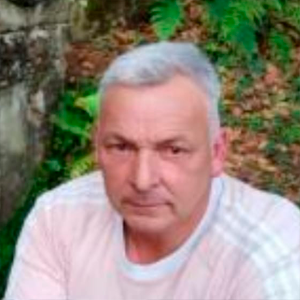
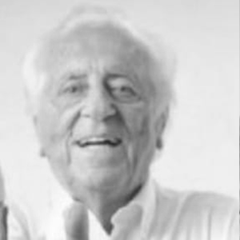
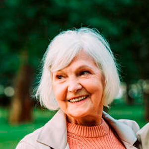

- persona: Nuria Inchaurrandieta Fernández
- datos:
- fechaNacimiento: 2001-05-04
- lugarNacimiento: Gijón, Asturias
- coordsNacimiento:
- longitud: -5.647731114109561
- latitud: 43.53527084736443
- altitud: 5

- comentario: Estudiante de Ingeniería Informática del Software
- persona: Roberto Inchaurrandieta Granda
- datos:
- fechaNacimiento: 1971-07-26
- lugarNacimiento: Pravia, Asturias
- coordsNacimiento:
- longitud: -6.112974715606762
- latitud: 43.48615050039599
- altitud: 59

- comentario: Padre
- persona: Luciano Inchaurrandieta Pérez
- datos:
- fechaNacimiento: 1940-05-18
- lugarNacimiento: Viu de Llevata, Lleida
- coordsNacimiento:
- longitud: 0.8121072331378797
- latitud: 42.369490391361744
- altitud: 1234
- fechaFallecimiento: 2003-09-04
- lugarFallecimiento: Avilés, Asturias
- coordsFallecimiento:
- longitud: -5.92714800211595
- latitud: 43.55452206422115
- altitud: 21
- 
- comentario: Abuelo por parte de padre
- persona: Juan Bautista Inchaurrandieta Zumarraga
- datos:
- fechaNacimiento: 1906-07-03
- lugarNacimiento: Muros de Nalón, Asturias
- coordsNacimiento:
- longitud: -6.105562702215373
- latitud: 43.543443469226325
- altitud: 131
- fechaFallecimiento: 1992-05-22
- lugarFallecimiento: Soto del Barco, Asturias
- coordsFallecimiento:
- longitud: -6.071216075733286
- latitud: 43.5327410987212
- altitud: 61
- 
- comentario: Bisabuelo por parte de abuelo por parte de padre
- persona: María Pérez Gómez
- datos:
- fechaNacimiento: 1905-06-14
- lugarNacimiento: Muros de Nalón, Asturias
- coordsNacimiento:
- longitud: -6.117188853029939
- latitud: 43.546583727625325
- altitud: 126
- fechaFallecimiento: 1971-05-12
- lugarFallecimiento: Muros de Nalón, Asturias
- coordsFallecimiento:
- longitud: -6.115056099849746
- latitud: 43.54462513987004
- altitud: 136

- comentario: Bisabuela por parte de abuelo por parte de padre
- persona: María Luisa Granda Valdés
- datos:
- fechaNacimiento: 1942-08-10
- lugarNacimiento: Muros de Nalón, Asturias
- coordsNacimiento:
- longitud: -6.105562702215373
- latitud: 43.543443469226325
- altitud: 131
- 
- comentario: Abuela por parte de padre
- persona: Juan Salvador Granda Arango
- datos:
- fechaNacimiento: 1905-04-19
- lugarNacimiento: Muros de Nalón, Asturias
- coordsNacimiento:
- longitud: -6.104488616888746
- latitud: 43.54392395787351
- altitud: 129
- fechaFallecimiento: 1975-10-05
- lugarFallecimiento: Muros de Nalón, Asturias
- coordsFallecimiento:
- longitud: -6.105338597679843
- latitud: 43.542968196793865
- altitud: 131

- comentario: Bisabuelo por parte de abuela por parte de padre
- persona: Alicia Claudia Valdés Grande
- datos:
- fechaNacimiento: 1905-06-07
- lugarNacimiento: Muros de Nalón, Asturias
- coordsNacimiento:
- longitud: -6.103439310272827
- latitud: 43.5420252216079
- altitud: 114
- fechaFallecimiento: 1994-03-20
- lugarFallecimiento: Muros de Nalón, Asturias
- coordsFallecimiento:
- longitud: -6.104444111702224
- latitud: 43.542848205718656
- altitud: 130

- comentario: Bisabuela por parte de abuela por parte de padre
- persona: María del Rocío Fernández Aragón
- datos:
- fechaNacimiento: 1971-01-29
- lugarNacimiento: Gijón, Asturias
- coordsNacimiento:
- longitud: -5.607511687123249
- latitud: 43.52589336435242
- altitud: 61

- comentario: Madre
- persona: Baltasar Fernández Pastor
- datos:
- fechaNacimiento: 1937-02-22
- lugarNacimiento: Villalobos, Zamora
- coordsNacimiento:
- longitud: -5.4759527238233625
- latitud: 41.94602846067811
- altitud: 724

- comentario: Abuelo por parte de madre
- persona: Faustino Fernández García
- datos:
- fechaNacimiento: 1917-01-10
- lugarNacimiento: Villalobos, Zamora
- coordsNacimiento:
- longitud: -5.4747118042864535
- latitud: 41.947397252214984
- altitud: 722
- fechaFallecimiento: 1975-09-05
- lugarFallecimiento: Gijón, Asturias
- coordsFallecimiento:
- longitud: -5.607511687123249
- latitud: 43.52589336435242
- altitud: 61

- comentario: Bisabuelo por parte de abuelo por parte de madre
- persona: Clorinda Pastor San Lorenzo
- datos:
- fechaNacimiento: 1916-03-05
- lugarNacimiento: Villalobos, Zamora
- coordsNacimiento:
- longitud: -5.473644537059647
- latitud: 41.94509313552526
- altitud: 733
- fechaFallecimiento: 2003-10-17
- lugarFallecimiento: Madrid
- coordsFallecimiento:
- longitud: -3.6872690561884567
- latitud: 40.481326490381385
- altitud: 728

- comentario: Bisabuela por parte de abuelo por parte de madre
- persona: María del Rocío Aragón Aparicio
- datos:
- fechaNacimiento: 1936-10-31
- lugarNacimiento: Valdunquillo de Campos, Valladolid
- coordsNacimiento:
- longitud: -5.313715446650053
- latitud: 42.042548484682314
- altitud: 740

- comentario: Abuela por parte de madre
- persona: Gelasio Aragón Pastor
- datos:
- fechaNacimiento: 1908-02-16
- lugarNacimiento: Valdunquillo de Campos, Valladolid
- coordsNacimiento:
- longitud: -5.311783858067096
- latitud: 42.041480555563595
- altitud: 740
- fechaFallecimiento: 2000-04-21
- lugarFallecimiento: Valdunquillo de Campos, Valladolid
- coordsFallecimiento:
- longitud: -5.314208420676102
- latitud: 42.04151825301395
- altitud: 740
- comentario: Bisabuelo por parte de abuela por parte de madre
- persona: María Paz Aparicio San José
- datos:
- fechaNacimiento: 1906-11-25
- lugarNacimiento: Valdunquillo de Campos, Valladolid
- coordsNacimiento:
- longitud: -5.310788873185057
- latitud: 42.040457528893455
- altitud: 743
- fechaFallecimiento: 1986-06-14
- lugarFallecimiento: Valdunquillo de Campos, Valladolid
- coordsFallecimiento:
- longitud: -5.314208420676102
- latitud: 42.04151825301395
- altitud: 740
- comentario: Bisabuela por parte de abuela por parte de madre